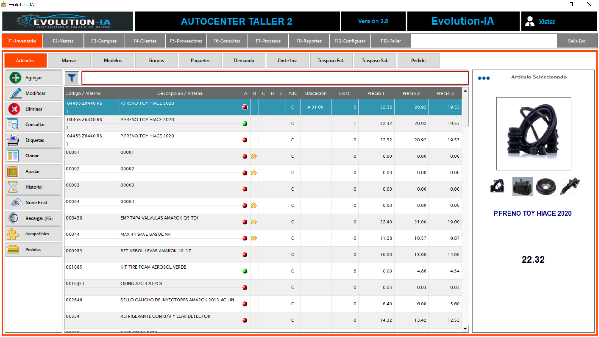

Artículos (Cátalogos)
En Evolution-IA sabemos la importancia de contar con un catálogo de artículos con el cual puedas
consultar desde claves, precios, propiedades, hasta imágenes y características de cada uno de
los productos y servicios que ofreces a tus clientes. Por ello, en esta sección te mostraremos
paso a paso como dar de alta tus artículos, y te explicamos cada uno de los datos que podrás
capturar.
Para iniciar dirígete al menú de INVENTARIO → ARTÍCULOS.

Ejemplo visual del catálogo de artículos en Evolution-IA